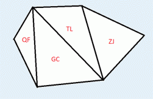
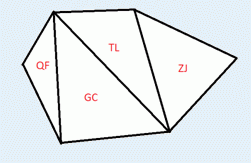

到了难得的暑假，为了庆祝小白在数学考试中取得的优异成绩，小蓝决定带小白出去旅游~~
经过一番抉择，两人决定将T国作为他们的目的地。T国的国土可以用一个凸N边形来表示，N个顶点表示N个入境/出境口。T国包含N-2个城市，每个城市都是顶点均为N边形顶点的三角形(换而言之，城市组成了关于T国的一个三角剖分)。两人的旅游路线可以看做是连接N个顶点中不相邻两点的线段。

为了能够买到最好的纪念品，小白希望旅游路线上经过的城市尽量多。作为小蓝的好友，你能帮帮小蓝吗？
| F.A.Qs | Home | Discuss | ProblemSet | Status | Ranklist | Contest | 入门OJ | ModifyUser Xeonacid | Logout | 捐赠本站 |
|---|
到了难得的暑假，为了庆祝小白在数学考试中取得的优异成绩，小蓝决定带小白出去旅游~~
经过一番抉择，两人决定将T国作为他们的目的地。T国的国土可以用一个凸N边形来表示，N个顶点表示N个入境/出境口。T国包含N-2个城市，每个城市都是顶点均为N边形顶点的三角形(换而言之，城市组成了关于T国的一个三角剖分)。两人的旅游路线可以看做是连接N个顶点中不相邻两点的线段。

4<=N<=200000